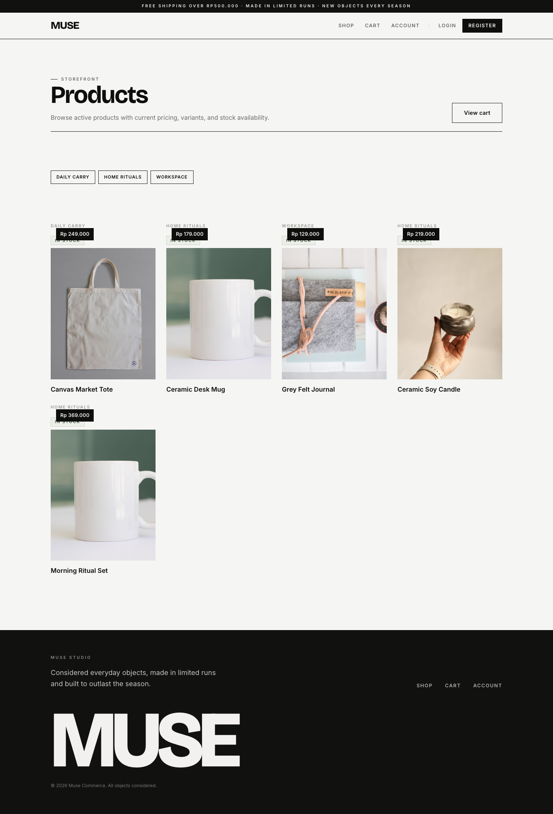
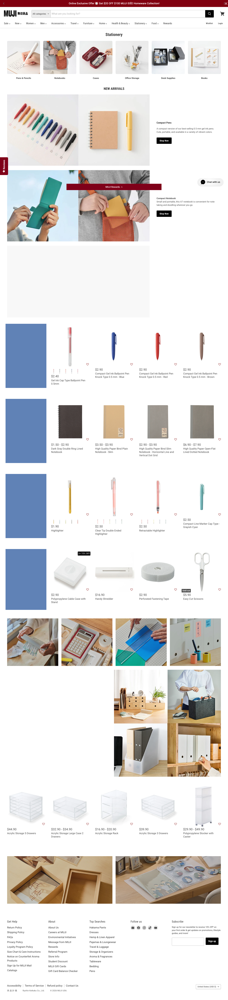
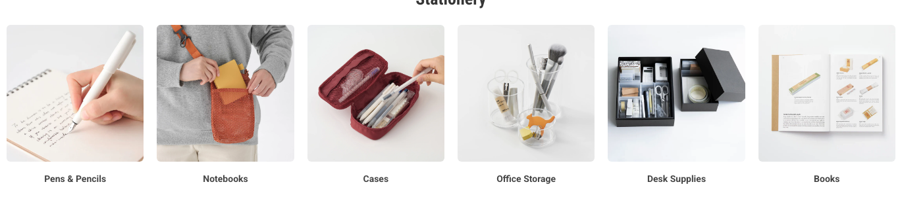
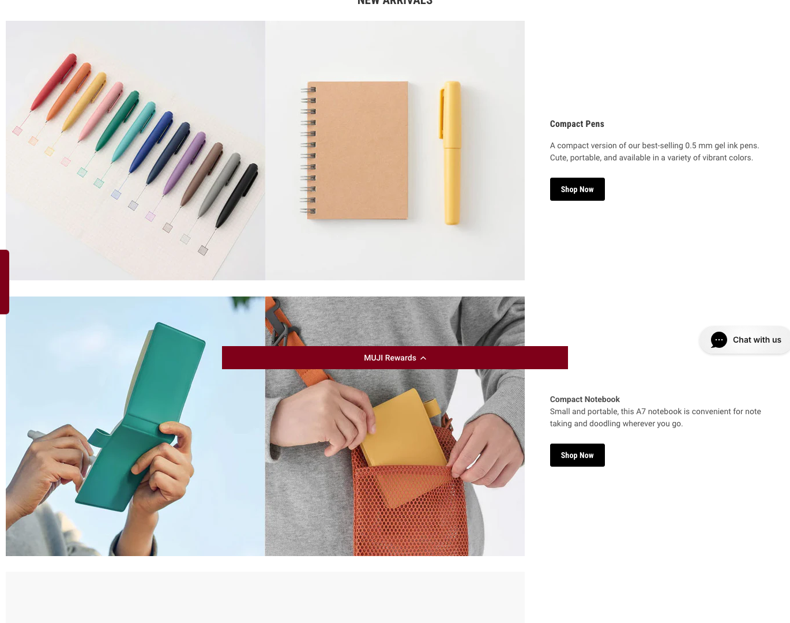

Catalog Requirement
Turn /products into a collection browsing page: category
tiles at the top, optional promo panels, a filter/sort bar, and a
quiet grid of product cards. The page should prioritize scanning,
comparison, and quick movement into product detail.
Keep the route simple. ProductsIndex should load catalog
data and compose CollectionHeader,
CategoryTileRail, FilterSortBar, and
ProductGrid.
Current Page And MUJI Reference

Differences To Resolve
| Area | Current MUSE | Reference behavior | Required MUSE change |
|---|---|---|---|
| Collection intro | Large "Products" heading and descriptive paragraph. | Small collection title, category tiles, then commerce content. | Reduce heading scale and move into CollectionHeader. |
| Categories | Text chips only. | Image-backed category tiles near top. | Build CategoryTileRail; fall back to text if no image exists. |
| Promo blocks | No collection-level visual modules. | Useful collection promos above product grid. | Add optional CollectionPromoGrid from banners/content later. |
| Product cards | Shared styling with current MUSE visual signature. | White/neutral grid, simple product image, price, title, wishlist icon. | Use shared StorefrontProductCard with quieter text and square media. |
| Filtering | No filter/sort UI beyond category chips. | Collection browsing expects filtering, sorting, and availability cues. | First pass: category filter, availability toggle, sort select, clear action. |
| Loading | Generic LoadingState. |
Grid can show skeleton blocks and preserve layout. | Add ProductGridSkeleton with fixed card dimensions. |
Component Requirements With Crops

CategoryTileRail
Horizontal image-backed category links with compact labels.
- Already have
catalog.categoriesand currentcategory-row.- Get rid
- Chip-only category presentation as the main discovery tool.
- Need
- Category image, slug/filter target, active state, mobile horizontal scroll.

CollectionPromoGrid
Collection-specific feature images and short CTA blocks above the product grid.
- Already have
- Homepage banners only.
- Get rid
- None in first pass.
- Need
- Admin-managed collection content or reuse content banners by category.

ProductGrid
Responsive grid that preserves card dimensions and supports empty/loading states.
- Already have
product-gridCSS and mapped products.- Get rid
- Route-specific card markup duplicated from home.
- Need
- Shared grid wrapper, skeleton, empty state, product count.
StorefrontProductCard
Quiet product card with square image, price, name, category/status, and optional favorite button.
- Already have
- Product image, name, min price, stock status, category name.
- Get rid
- Heavy status emphasis and current brand-card treatment.
- Need
- Small status/badge area, wishlist placeholder, consistent image ratio.
CollectionHeader
Restrained title, count, short description, and optional breadcrumb.
- Already have
catalog-heading.- Get rid
- Large display heading and oversized paragraph.
- Need
- Product count and optional category context.
FilterSortBar + ProductGridSkeleton
Compact filter controls and skeletons that do not shift the grid.
- Already have
LoadingState, category data, status data.- Get rid
- Full-page loading as the only catalog loading pattern.
- Need
- Filter state, sort state, fixed skeleton card sizes.
Current Components Inventory
| Current piece | Status | Action |
|---|---|---|
ProductsIndex |
Keep | Keep query and route composition. Extract visual sections. |
catalog-heading |
Replace style | Use smaller CollectionHeader. |
category-row |
Replace | Use image-backed CategoryTileRail with text fallback. |
product-grid |
Keep/restyle | Keep responsive behavior; adjust gaps/card dimensions. |
StatusBadge |
Keep/restyle | Use compact status text or pill only when operationally useful. |
LoadingState |
Supplement | Add grid skeleton for catalog loading. |
Data And Build Notes
Simple First Pass
Use current categories/products only. Build text fallback category tiles if category images are absent.
Missing Data
Search, sort by price/newest, wishlist, quick shop, category image quality, and collection promo content.
Admin Dependency
Later, admin content/categories should manage category images and collection promo modules.